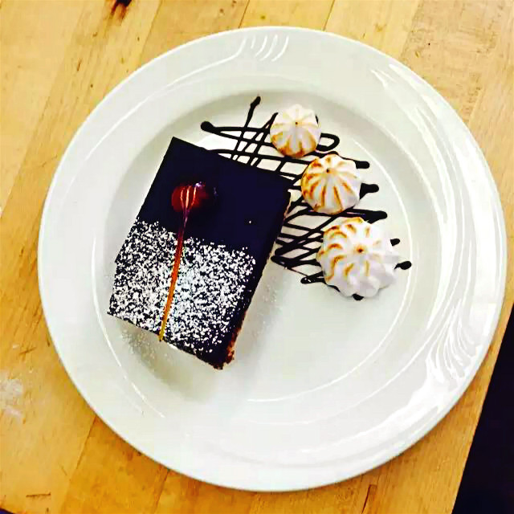
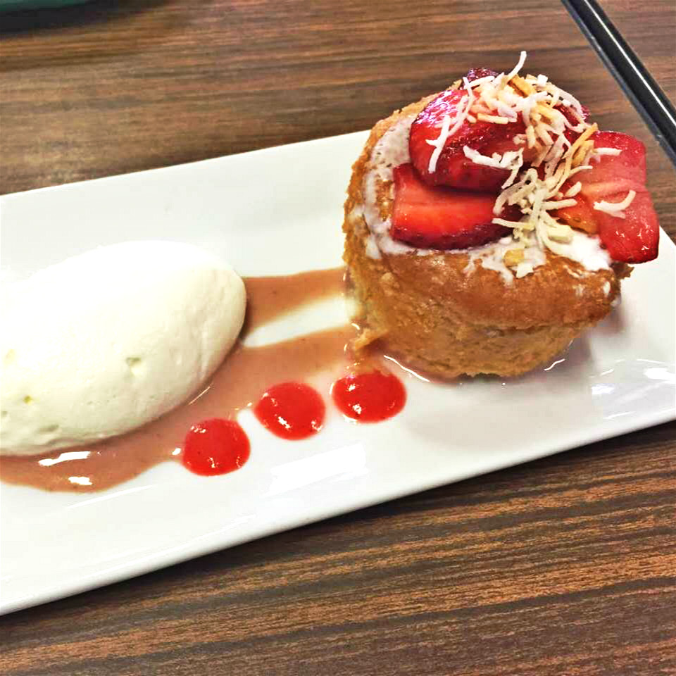
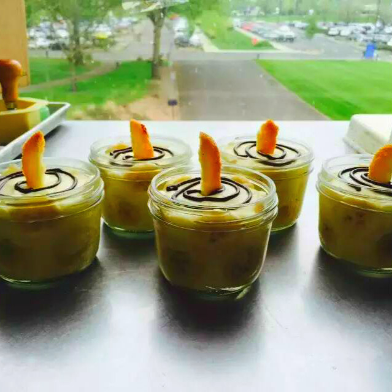
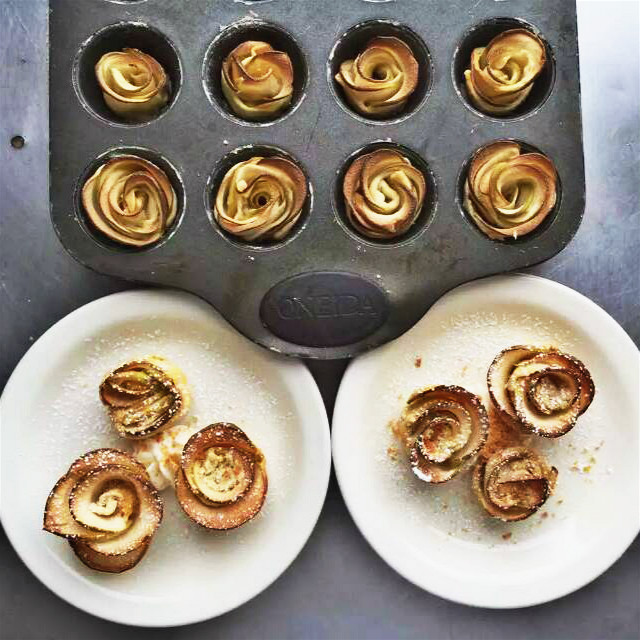

Baking can be very rewarding—especially when the fruits of your labor turn out healthy and delicious. Browse through our best techniques and recipes to start your delectable baking adventure. Whether you are baking a layer cake for a birthday, or welcoming a new neighbor with a bundt cake, we’ve got the goods for you. Browse for all different types of cake recipes, techniques, and frosting tips.
-

Black Forest Cake | $7.99
Ingredients include organic 75% dark chocolate, caremal made with coconut sugar, gluten-free flour and nut butter.
-

Strawberry Dream | $5.79
Ingredients include fresh organic strawberry, caremal made with coconut sugar, gluten-free flour and nut butter.
-

Peach Crème Brûlée | $6.29
Ingredients include fresh organic peach, caremal made with coconut sugar, almond milk and cream.
-

Apple Rose | $1.29
Ingredients include local produced fresh organic apples, caremal made with coconut sugar, icing sugar and cinnamon.